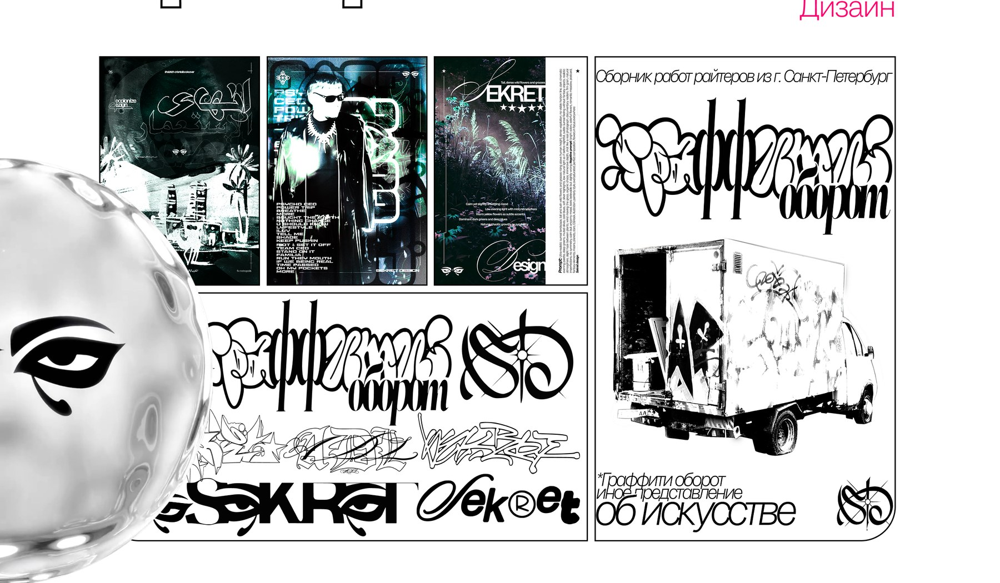

01Challenge
Сформулировать личный почерк Sekret Design на стыке граффити-культуры и графического дизайна — так, чтобы он работал не только на экране, но и на реальных объектах.
FormatПостеры, обложки треков, леттеринг-знаки, роспись фургона
02Response
Серия чёрно-белых постеров со шрифтовыми композициями: каллиграфический акцент, плотный гротеск и мелкий служебный текст собраны вокруг одного фирменного знака.

03Application
Тот же язык перенесён с листа на объект: авторский знак «Графферство оборот» и роспись фургона петербургских райтеров — система, которая выдерживает переход в физическую среду.

04System
Ещё одна линия серии — постеры на стыке дизайна и генеративной графики. Меняется изображение, но грамматика остаётся прежней: шрифт, ритм и знак.
05Value
Узнаваемый почерк, который масштабируется — от обложки трека до объекта стрит-арта.
